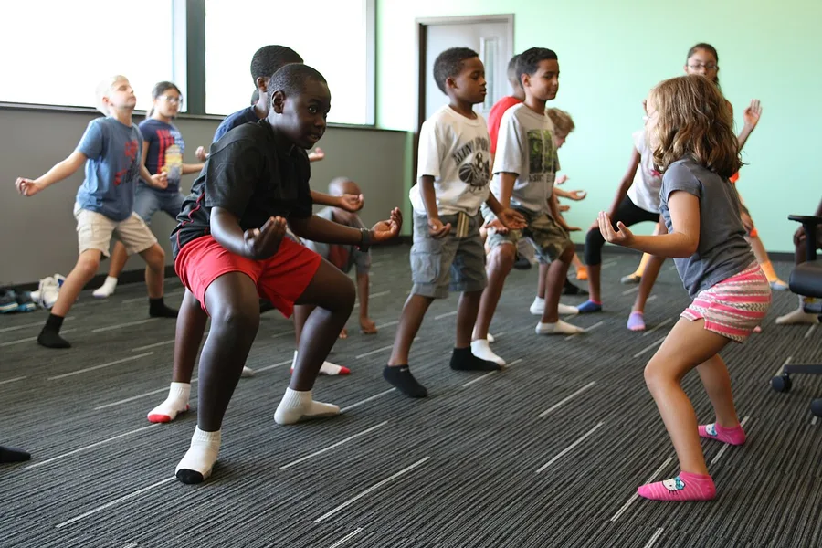

Kids Yoga, First Session
Animal poses, slow breaths, and a room that settles itself: a first yoga session built for wiggly bodies.
Before you begin
- Ages
- 4–12
- Group
- 4–25 kids
- Time
- 20–30 min
- Where
- Indoors
- Prep
- Some prep needed

Setup
Mats or carpet squares in rows with a clear lane to walk, shoes off at the door, and the lights as low as the room allows. The leader sits where every child can see. One rule covers the whole session, said at the start: your mat is your island, and nobody corrects anybody else's pose.
Materials
- yoga mats or carpet squares (one per child)
- calm music (optional)
Steps
- Start seated. Breathe in while hands float up, out while they float down, five slow rounds, until the room's noise drops along with the hands.
- Move through animal poses, three breaths each: cat and cow on hands and knees, downward dog, a low hissing cobra, then frog squats with three jumps at the end of the set to spend the giggles.
- Standing poses next: tree (foot resting at ankle or calf, never pressed into the knee), warrior two, and airplane, tipping forward with arms out, where falling over is expected and applauded.
- Close the active half with a partner pose: seated back to back, breathing slowly enough that each partner can feel the other's breath move. Thirty quiet seconds is a triumph.
- Finish lying down, eyes closed or gazing up, for one minute of stillness with a picture to hold in mind: floating on a raft, snow falling. Wake the room slowly: fingers, toes, then sitting.
Variations
Easier: Chair yoga for the whole session: every pose takes its seated form, and the breathing rounds carry the class.
Harder: Flow round: link four known poses into a sequence and repeat it without the leader's voice, the group counting breaths in silence.
Safety
Yoga is invited, never forced: any child may rest in child's pose or sit out any move, no reason needed. No pose pushes a joint past comfort, and a child who feels dizzy sits down at once. Bodies differ; the session bends to the bodies in it, never the other way around.
Source: source post at cosmickids.com, adapted in our own words
Inclusion notes
Every pose here has a chair form and a standing form of equal standing, and the leader shows both. A child using a mobility aid places their mat where the lane is widest.
Tried this? Rate it
Your ratings live in this browser only. Nobody else can see them. There are no community ratings here; every star on this card is yours.
Rate this activity, add a note, or write a reflection
Quick reflection
Optional, saved with your rating, and exported with "Copy my week".
Full activity card,